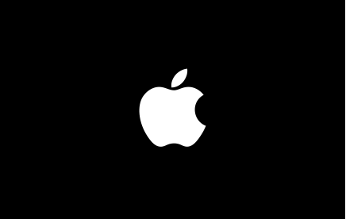

Apple anuncia quatro novos Animojis
Postado em 20/02/2018

Um dos destaques do iPhone X, os Animojis utilizam a tecnologia de reconhecimento facial da Apple para deixar você controlar emojis animados em seu smartphone. Agora, a companhia anunciou o lançamento de quatro novos elementos para aumentar as possibilidades de quem tem um iPhone X.
As novidades são um leão, um urso, um dragão e uma caveira e todas estarão disponíveis para os usuários finais a partir da versão 11.3 do iOS. Esta será a próxima grande atualização do sistema mobile da Maçã, que promete ainda um melhor gerenciamento da bateria e também novos recursos de realidade aumentada por meio do ARKit.
Postado por Felipe Okino
Apple quer trazer de volta o logo retrô da maçã colorida
Postado em 20/02/2018

Os mais novinhos não devem se lembrar, mas desde a estreia da Apple em 1976 até a retomada com Steve Jobs no final dos anos 1990, o grande símbolo da companhia, a maçã, apresentava faixas coloridas, com as cores do arco-íris. E, ao que parece, a Gigante de Cupertino quer trazer o logotipo retrô de volta, para explorar em seu merchandising.
De acordo com documentos flagrados pelo The Blast, a empresa registrou o pedido no escritório de patentes e marcas Trademark Reporting and Monitoring System, em dezembro do ano passado. A descrição prevê que o ícone retrô volte a ser utilizado para estampar chapéus, bonés, camisetas e outros itens, que devem ser comercializados e distribuídos como mimos para quem visitar a loja de artigos do novo quartel-general Apple Park.
Postado por Felipe Okino